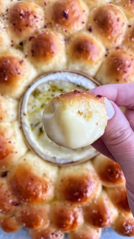

Moja beleška
SačuvanoNemojte da vas dužina vremena koja je potrebna za pripremu pokoleba, oooo, to ni slučajno! Izuzetno je lako pripremiti, potrebno je samo imati strpljenja dok testo narasta. Ali ovom ćete oduševiti i najveće probirljivce. Testo je mekano kaoooo duša. Blaga aroma luka, krupna morska so, pa kad se okruglice hleba umoče u otopljen sir, maaa 🥰🥰🥰 T R A N S !!! Pišite mi utiske čim isprobate, a do tada javite kako vam se čini video pripreme 🤗 Potrebni sastojci:
Sastojci
- Za testo
- Za umak
- Za premazivanje
Priprema
Sve sastojke za testo sem putera sipati u posudu za mućenje pa mutiti lagano mikserom nekih 10ak minuta. Potom dodavati puter u komadićima muteći i dalje. Neka mikser radi još 10ak minuta srednjom brzinom. Smesa postaje kompaktna, ali je jako lepljiva. Nauljiti drugu posudu, prebaciti testo i pokriti krpom. Neka na toplom odstoji nekih sat vremena ili dok se ne duplira. Potom je prebaciti na pobrasnjenu podlogu, posuti malo brašnom i uz pomoć sekača odvojiti parčiće i proizvoljno birajte veličinu loptica. Na sredinu pleha na koji ste postavili drveni obruč od sira ređati kružno loptice od testa. Premažite ih belancetom. Površinsku opnu od sira uklonite, pa preko njega pospite malo maslinovog ulja i začina po ukusu. Ostaviti pokriveno krpom dok se rerna greje na 180C. Peče se nekih 18 -20 minuta ili dok ne dobije lepu zlatnu boju. Vrelo premazite otopljenim puterom u koju ste stavili malčice luka u prahu, pa pospite krupnom morskom soli. Loptice hlebića umačite u sir koji se divno otopio i verujte mi nepca će odlepiti od sreće. 🥰🥰🥰 Nadam se da vam se dopada, kod nas se ne zna ko je više oduševljen ❤️
Originalni opis sa Instagrama
Aromatični hlebčići sa umakom od sira 🥖🧈🧀 Nemojte da vas dužina vremena koja je potrebna za pripremu pokoleba, oooo, to ni slučajno! Izuzetno je lako pripremiti, potrebno je samo imati strpljenja dok testo narasta. Ali ovom ćete oduševiti i najveće probirljivce. Testo je mekano kaoooo duša. Blaga aroma luka, krupna morska so, pa kad se okruglice hleba umoče u otopljen sir, maaa 🥰🥰🥰 T R A N S !!! Pišite mi utiske čim isprobate, a do tada javite kako vam se čini video pripreme 🤗 Potrebni sastojci: Za testo: •200 ml mlakog mleka •20 gr šećera •1 suvi kvasac •1 jaje + jedno žumance (belance sačuvati za premazivanje) •380 gr mekog, belog brasna •8 gr soli •65 gr putera u kockicama Za umak: •Camembert sir •malčice maslinovog ulja •začini po ukusu Za premazivanje: •60 gr istopljenog putera •malčice sitno seckanog luka ili luka u prahu •krupna morska so Sve sastojke za testo sem putera sipati u posudu za mućenje pa mutiti lagano mikserom nekih 10ak minuta. Potom dodavati puter u komadićima muteći i dalje. Neka mikser radi još 10ak minuta srednjom brzinom. Smesa postaje kompaktna, ali je jako lepljiva. Nauljiti drugu posudu, prebaciti testo i pokriti krpom. Neka na toplom odstoji nekih sat vremena ili dok se ne duplira. Potom je prebaciti na pobrasnjenu podlogu, posuti malo brašnom i uz pomoć sekača odvojiti parčiće i proizvoljno birajte veličinu loptica. Na sredinu pleha na koji ste postavili drveni obruč od sira ređati kružno loptice od testa. Premažite ih belancetom. Površinsku opnu od sira uklonite, pa preko njega pospite malo maslinovog ulja i začina po ukusu. Ostaviti pokriveno krpom dok se rerna greje na 180C. Peče se nekih 18 -20 minuta ili dok ne dobije lepu zlatnu boju. Vrelo premazite otopljenim puterom u koju ste stavili malčice luka u prahu, pa pospite krupnom morskom soli. Loptice hlebića umačite u sir koji se divno otopio i verujte mi nepca će odlepiti od sreće. 🥰🥰🥰 Nadam se da vam se dopada, kod nas se ne zna ko je više oduševljen ❤️ • • • #domacihleb #aromaticnihleb #hlebsalukom #hlebsasirom #testo #domacetesto #recepti #mojirecepti #slanirecepti #slanisi #idejezadoručak #idejezaručak #idejezaveceru #homemadebread #sourdoughbread